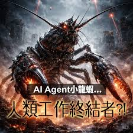

結論：擁抱AI代理，開創養龍蝦新時代

115/04/29財經新聞：OpenAI營收未達標「拖累美股」 台股重挫600點
總結
AI代理技術為傳統龍蝦養殖業帶來革命性改變，
通過智慧監控、自動化管理和數據驅動決策，大幅提升生產效率和品質。
專題重點回顧
在本專題中，我們探討了AI代理在龍蝦養殖中的多方面應用，從核心技術的實現到實際場景的應用，再到潛在風險的評估，最後展望了美好的未來。
AI代理不僅能夠優化養殖過程，還能促進永續發展，為養殖業開闢新道路。
技術創新
AI與物聯網的結合帶來前所未有的養殖效率
永續發展
智慧管理有助於資源節約和環境保護
經濟效益
提升產量品質，創造更高價值
風險管控
及早識別並管理潛在風險
行動呼籲
現在是時候擁抱AI技術，開始您的智慧養殖之旅了！
無論您是小型養殖戶還是大型企業，AI代理都能為您帶來顯著的改進。
讓我們一起開創龍蝦養殖的美好未來！